품질경영산업기사 (2009-05-10 기출문제)
1과목: 실험계획법
1. 부품에 대하여 인자 A를 3수준으로 하여 반복 6회 실험한 결과, 다음과 같이 실험을 3번 실패한 데이터를 얻었다. 이 때 SA의 값은 약 얼마인가?
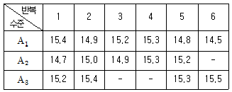
- 0.323
- 0.484
- 0.672
- 1.245
(정답률: 50%)

2. 인자 A가 모수인 1원배치의 분산분석표에서 4, 반복수 5, ST=14.16, SA=10.10, Se=4.06 일 때, F0 값은 약 얼마인가?
- 2.488
- 9.951
- 13.268
- 15.755
(정답률: 70%)
3. 다음은 반복수가 일정하지 않은 1원배치의 분산분석표이다. 분산비(F0)의 값은 약 얼마인가?
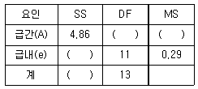
- 2.14
- 2.43
- 3.19
- 8.38
(정답률: 69%)
4. 유기합성반응에서 원료(A) 4종류, 반응온도(B) 5종류를 선택하고, 반복 없는 2원 배치법으로 분산 분석표를 작성하였더니 A, B가 모두 유의하여 최적 조건으로 A2B5를 찾았다. A2B5의 모평균 구간추정을 구하기 위한 유효 반복수(ne) 얼마인가? (단, 인자 A, B는 모수모형이다.)
- 2.5
- 3.5
- 4.0
- 5.0
(정답률: 60%)
5. x=회귀변수, y=반응변수이며, x의 편차제곱합 S(xx)=90, y의 편차제곱합 S(yy)=400, 회귀에 의하여 설명되는 변동 SR=360 이었다. 이 때 결정계수는 약 얼마인가?
- 0.100
- 0.225
- 0.889
- 0.900
(정답률: 67%)
6. 다음은 모수인자 A(2수준)와 모수인자 B(2수준)를 반복 없는 2원배치로 실험한 결과를 나타낸 것이다. 인자 B의 변동(SB)은 약 얼마인가?
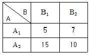
- 2.04
- 2.25
- 2.42
- 2.52
(정답률: 57%)
7. 반복이 2회 있는 2원배치 실험(모수모형)을 실시하여 다음의 데이터를 얻었다. 급간변동 SAB의 자유도는 얼마인가? (단, 인자 A는 5수준, 인자 B는 6수준이다.)
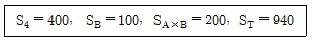
- 20
- 29
- 30
- 59
(정답률: 34%)
8. 직교배열표에 인자를 배치하기 위한 방법으로 선점도를 사용하려고 한다. 2 수준계 선점도에 대한 설명으로 틀린 것은?
- 선과 점은 모두 자유도 2를 갖는다.
- 점이나 선은 각각 하나의 열을 표시한다.
- 점과 점은 각각 하나의 요인을 나타낸다.
- 두 점을 연결하는 선은 교호작용을 나타낸다.
(정답률: 72%)
9. 다음 중 난괴법에 대한 설명으로 옳은 것은?
- 반복이 없는 2원배치 실험이다.
- 두 인자의 교호작용을 구할 수 있다.
- 1인자는 모수인자이고, 1인자는 변량인자이다.
- 인자 B가 변량이면 모평균 추천은 의미가 있다.
(정답률: 47%)
10. 반복이 같지 않는 모수모형의 1원배치에 관한 데이터가 다음과 같았다. 이 때 급간변동(SA)는 약 얼마인가?
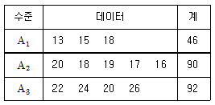
- 109.33
- 119.33
- 129.33
- 139.33
(정답률: 63%)
11. 라틴방격법의 실험 데이터가 다음 표와 같이 얻어졌다. 이 때 C의 변동(Sc)은 약 얼마인가?
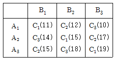
- 1.56
- 2.64
- 3.78
- 4.92
(정답률: 58%)
12. 다음과 같은 반복이 있는 모수모형 2원배치 데이터를 얻었다. 인자 B의 변동은 약 얼마인가?
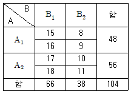
- 8
- 98
- 106
- 108
(정답률: 67%)
13. 실험계획법에서 사용하는 오차항의 가정이 아닌 것은?
- 정규성(normality)
- 종속성(dependence)
- 불편성(unbiasedness)
- 등분산성(equal variance)
(정답률: 43%)
14. 다음은 직교 배열표를 표시하는 일반적인 형태이다. 각 문자에 대한 설명으로 틀린 것은?
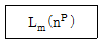
- L은 Latin square의 약자이다.
- m은 행의 수로서 실험의 크기를 나타낸 것이다.
- n은 인자의 수를 나타낸 것이다.
- P는 배치 가능한 최대 인자수를 나타낸 것이다.
(정답률: 40%)
15. 제조공정에서 3개의 인자 A, B, C를 각각 3수준씩 선택하여 라틴방격에 의해 실험을 한 결과, 3개의 인자 A, B, C 모두 유의적이었다. 세 인자의 조합의 신뢰구간을 추정할 경우 유효반복수는 약 얼마인가?
- 0.78
- 1.13
- 1.29
- 1.50
(정답률: 43%)
16. 다음 [표]와 같은 1원배치 실험데이터에서 전변동(ST)은 약 얼마인가?
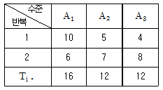
- 5.33
- 23.33
- 266.67
- 284.67
(정답률: 50%)
17. 다음의 데이터는 기계 종류별로 생산된 제품 중 각각 100개씩 샘플을 뽑아 적합품과 부적합 품으로 구분한 것이다. 오차창의 자유도는 얼마 인가?
- 200
- 297
- 299
- 300
(정답률: 47%)
18. 검사원들간의 측정값의 차이를 분석하기 위해 4명의 검사원을 랜덤으로 뽑아 표준시료를 동일한 계측기로 5회씩 반복하여 측정하도록 하였다. 측정 결과를 활용하여 작성한 분산분석가 다음과 같을 때, 인자 A의 산포의 추정치(
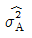
)는 약 얼마인가?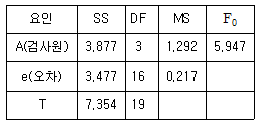
- 0.215
- 0.269
- 0.358
- 0.431
(정답률: 48%)
19. 인자 A가 5수준, 인자 B가 4수준인 모수모형의 반복 없는 2원배치 실험에서 오차의 변동이 36일 때, 오차의 순변동은 얼마인가?
- 36
- 57
- 63
- 80
(정답률: 53%)
20. 인자의 수준과 수준수를 결정하는 방법으로 가장 거리가 먼 것은?
- 최적이라고 예상되는 인자의 수준은 포함시켜야 한다.
- 현재 사용되고 있는 인자의 수준은 포함시키는 것이 좋다.
- 수준수는 2 이상을 선택하되 가급적 6이상이 되지 않도록 한다.
- 실제 적용이 불가능한 인자의 수준도 흥미영역에 포함되어야 한다.
(정답률: 58%)
2과목: 통계적품질관리
21. 전구 10개의 수명을 측정하였더니 평균( )이 1200시간, 표전편차(s)가 75시간이었다. 전구수명의 모분산(σ2)의 95% 신뢰구간은 약 얼마인가? (단,
)이 1200시간, 표전편차(s)가 75시간이었다. 전구수명의 모분산(σ2)의 95% 신뢰구간은 약 얼마인가? (단,
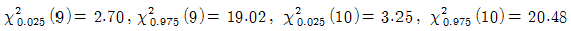
이다.)- 52~137
- 296~2083
- 2472~15576
- 2662~18750
(정답률: 48%)
22. 다음 중 베이즈 정리(Bayes theorem)를 설명하는 식은? (단, P(A)＞0, P(B)＞0 이다.)
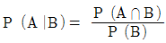
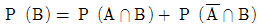
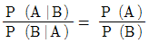
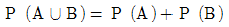
(정답률: 53%)
23. 다음 중 검사의 목적을 설명한 것으로 가장 거리가 먼 것은?
- 공정능력을 측정하기 위하여
- 고객의 요구를 파악하기 위하여
- 검사원의 정확도를 평가하기 위하여
- 적합품과 부적합품을 구별하기 위하여
(정답률: 75%)
24. 관리도에 타점하는 통계량(statistic)은 정규분포를 한다고 가정한다. 공정(모집단)이 정규분포를 이룰 때에는 표본분포는 언제나 정규분포를 이루지만 공정의 분포가 정규분포가 아니더라도 표본의 크기가 클수록 정규분포에 접근한다는 이론은?
- 대수의 법칙
- 체계적 추출법
- 중심극한의 정리
- 크기비례 추출법
(정답률: 57%)
25. 샘플의 크기가 5인  관리도에서 관리상한선이 43.4, 관리하한선이 16.6 이었다. 공정의 분포가 N(30, 102) 일 때, 이 관리도에
관리도에서 관리상한선이 43.4, 관리하한선이 16.6 이었다. 공정의 분포가 N(30, 102) 일 때, 이 관리도에  가 관리한계를 벗어날 확률은 약 얼마인가?
가 관리한계를 벗어날 확률은 약 얼마인가?
- 0.0013
- 0.0027
- 0.0228
- 0.0455
(정답률: 54%)
26. 다음 도수분포표의 자료에서 평균치( )와 표준편차(s)는 각각 얼마인가?
)와 표준편차(s)는 각각 얼마인가?
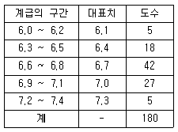
 = 6.745, s = 0.2935
= 6.745, s = 0.2935 = 6.745, s = 0.0293
= 6.745, s = 0.0293 = 6.700, s = 0.0067
= 6.700, s = 0.0067 = 6.700, s = 0.0259
= 6.700, s = 0.0259
(정답률: 50%)
27. 검사특성곡선에 관한 설명으로 옳지 않은 것은?
- N, c가 일정하고, n이 증가하면 검사특성곡선의 경사가 완만해진다.
- N, c가 일정하고, c가 증가하면 검사특성곡선의 경사가 완만해진다.
- c, n이 일정하고, N이 증가하면 검사측성곡선은 크게 영향을 받지 않는다.
- n과 c를 비례하여 샘플링하면, 각 샘플링 방식에 따라 품질보증의 정도가 크게 달라진다.
(정답률: 58%)
28. 어떤 제품의 수율 평균치를 신뢰도 95%로 구간 추정하고자 한다. 이 때 신뢰구간의 폭을 ±0.3% 이내로 하려면 시료의 수는 최소 몇 개 이상으로 하여야 하는가? (단, 종래 수율의 표준편차는 0.6%로 알려져 있다.)
- 11
- 16
- 44
- 62
(정답률: 65%)
29. 모집단의 부적합품률이 P이고, 로트의 크기가 N인 모집단에서 시료 n개를 취하였을 때, 시료 부적합수의 대 값 (μ)과 표준편차(σ)를 바르게 표현한 것은? (단, P > 10%이고, n/N < 0.1 이다.)
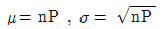
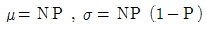
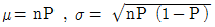
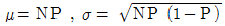
(정답률: 59%)
30. KS Q ISO 2859-1 : 2008에 따른 계수치 샘플링 검사 중 수월한 검사에서 보통검사로 전환하고자 할 경우, 세 가지 조건 중 하나만 해당되어도 전환된다. 이 세 가지 조건에 해당되지 않는 것은?
- 1로트가 불합격일 때
- 전환스코어가 30점이 넘었을 때
- 생산이 불규칙하거나 정체하였을 때
- 다른 조건에서 보통 검사로 복귀할 필요가 생겼을 때
(정답률: 58%)
31.
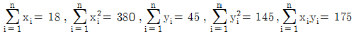
, n=32 일 때, 상관계수는 약 얼마인가?- 0.374
- 0.438
- 0.653
- 0.861
(정답률: 47%)
32. 샘플링 검사의 초기 실시순서를 바르게 나열한 것은?
- 검사단위 결정 → 검사항목 결정 → 검사 단위의 품질기준과 측정방법 결정 → 검사특성에 웨이트(weight) 선정
- 검사단위 결정 → 검사 단위의 품질기준과 측정 방법 결정 → 검사항목 결정 → 검사특성에 웨이트(weight) 선정
- 검사항목 결정 → 검사 단위의 품질기준과 측정 방법 결정 → 검사특성에 웨이트 (weight) 선정 → 검사단위 결정
- 검사단위 결정 → 검사항목 결정 → 검사특성에 웨이트 (weight) 선정 → 검사 단위의 품질기준과 측정방법 결정
(정답률: 59%)
33. A회사에서 생산하는 TV표면에는 평균적으로 7군 데의 핀홀(pinhole)이 있다. 이 통계량을 활용하여 신뢰수준 95%로 한쪽추정시 모부적합수의 신뢰상한값은 약 얼마인가?
- 7.92
- 10.20
- 11.35
- 12.18
(정답률: 36%)
34. p관리도와 np관리도에 대한 설명으로 옳지 않은 것은?
- 모두 부적합품과 관련된 관리도이다.
- 모두 이항분포를 응용한 계량형 관리도이다.
- 부분군의 시료크기가 일정할 때만 np관리도를 사용 한다.
- 부분군의 시료크기가 달라지면 p관리도의 관리한계도 달라진다.
(정답률: 53%)
35. 계량 규준형 1회 샘플링 검사에서 표준편차를 알고 있을 때 검사개수 40개, 합격판정계수는 2 이었다. 만약 표준편차를 알지 못할 경우, 표준편차를 알고 있는 경우와 동일하게 샘플링검사를 보증하려면 검사 개수는 몇 개인가?
- 60
- 80
- 120
- 150
(정답률: 31%)
36. 검 ㆍ 추정에 관련된 설명으로 옳지 않은 것은? (단, α는 제 1종의 과오, β는 제 2종의 과오이다.)
- α를 크게 할수록 검출력은 작아진다.
- 모표준편차를 작게 할수록 검출력은 커진다.
- 시료의 크기가 일정하면, α를 크게 할수록 β는 작아진다.
- α를 일정하게 하고, 기료의 크기를 크게 할수록 β는 작아진다.
(정답률: 46%)
37. 다음 중 공정의 변화가 서서히 나타나는 것을 효율적으로 탐지할 수 있는 관리도로 가장 적합한 것은?
- L-S 관리도
 관리도
관리도- 누적합관리도
 관리도
관리도
(정답률: 42%)
38. 다음 t분포에 대한 설명 중 옳지 않은 것은?
 는 F1-a(1,v) 와 동일한 값을 가진다.
는 F1-a(1,v) 와 동일한 값을 가진다. 는
는  와 동일한 값을 가진다.
와 동일한 값을 가진다.- 자유도 v 인 t분포에 따르는 확률변수의 기대값은 0이다.
- 자유도 v 가 2보다 클 때, t분포를 따르는 확률 변수의 분산은 v/v-2 이다.
(정답률: 50%)
39.  관리도에서
관리도에서
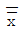
=2,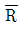
=3이고, 관리하한선은 0.269이다. 이 때 표본의 크기는 얼마인가? (단, n=2일 때, A2=1.880, n=3일 때 A2=1.023, n=4일 때, A2=0.729, n=5일 때 A2=0.577)- 2
- 3
- 4
- 5
(정답률: 43%)
40. 군의 수 25, 샘플의 크기 4로 하여 작성한
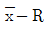
관리도에서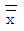
=27.70,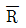
=1.02 이었다. 군내변동 (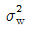
)를 추정하면 약 얼마인가? (단, n=4 일 때, d2=2.⑤9, d3=0.880 이다.)- 0.245
- 0.495
- 1.343
- 1.159
(정답률: 27%)
3과목: 생산시스템
41. 다음 자료를 이용하여 긴급률법에 의한 작업순서를 바르게 나열한 것은?
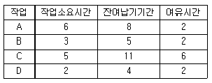
- A - B - D - C
- A - C - B - D
- C - A - B - D
- C - D - B - A
(정답률: 48%)
42. 고장률 곡선에서 고장률이 어느 정도 감소되어 일정한 선에서 유지되는 경향을 보일 때 이 단계를 무엇이라 하는가?
- 초기고장기
- 우발고장기
- 마모고장기
- 예방보전기
(정답률: 43%)
43. 일정관리의 주요 목표가 아닌 것은?
- 생산비용의 평준화
- 납기의 이랭 및 단축
- 대기 및 유휴시간의 최소화
- 생산 및 조달시간의 최소화
(정답률: 42%)
44. 절차계획에서 결정된 공정절차표와 일정계획에서 수립된 일정표에 따라 계획과 실제의 생산활동 연결시키고 실제의 생산활동을 개시하도록 허가하는 것은?
- 능력계획
- 여력관리
- 일정계획
- 작업배정
(정답률: 53%)
45. 작업분석에 있어 요소작업의 효과적인 개선활동을 위해 고려되어야 할 원칙인 ECRS의 내용으로 옳지 않은 것은?
- E - Eliminate(제거)
- C - Combine(결합)
- R - Repair(수리)
- S - Simplity(단순화)
(정답률: 36%)
46. PERT/CPM에서 어떤 요소작업의 정상작업이 10일에 250만원이고, 특급작업이 5일에 1000만원 일 때 비용구배 (Cost slope)는 약 얼마인가?
- 150만원/일
- 175만원/일
- 200만원/일
- 250만원/일
(정답률: 36%)
47. 시계열분석에 있어 4가지 변동 가운데 예측이나 통제가 불가능한 변동은?
- 추세변동
- 계절적 변동
- 순환변동
- 불규칙 변동
(정답률: 47%)
48. 다음 중 작업측정의 목적에 해당되지 않는 것은?
- 작업성과의 평가기준
- 소요인력의 추정
- 생산의 가용능력의 추정
- 작업속도의 레이팅
(정답률: 34%)
49. 과학적 관리법이라는 경영 합리화 운동을 통해 작업방법의 개선, 조직의 합리화, 능률증진을 위한 임금설정 등에 착안하여 기업 경영합리화 방안을 제시한 사람은?
- 포드 (H. Ford)
- 메이요 (E. Mayo)
- 간트 (H. Gantt)
- 테일러 (F. Taylor)
(정답률: 54%)
50. 기업활동을 위해 사용되는 기업 내의 모든 인적, 물적 자원을 효율적으로 관리하여 기업의 경쟁력을 강화시켜 주는 통합정보시스템은?
- MRP
- ERP
- SCM
- CRM
(정답률: 32%)
51. 도요타 생산방식에서 JIT시스템은 7가지 낭비를 제거하는데 목적을 두고 있는데, 다음 중 7가지 낭비에 해당되지 않는 것은?
- 동작의 낭비
- 고장의 낭비
- 가공의 낭비
- 과잉생산의 낭비
(정답률: 42%)
52. 메모동작연구(memo-motion study)에 관한 설명으로 옳지 않는 것은?
- 짧은 시간의 작업을 연속적으로 기록하기가 용이하다.
- 조작업 또는 사람과 기계와의 연합작업을 기록하는데 알맞다.
- 불규칙적인 사이클을 가진 작업을 기록하는데 적합하다.
- 여러 가지 설비를 사용하는 작업에 대해 워크샘플링을 실시할 수 있다.
(정답률: 50%)
53. 다음 중 사이클 타임을 산출하는 식으로 옳지 않은 것은?
- 총가용생산시간/목표생산량
- 총작업생산시간/목표생산량×(1-여유율)
- 해당 제품의 총 작업소요시간/최소의 직업장 수
- 총작업소요시간×(1-부적합품률)/목표생산량
(정답률: 38%)
54. 스톱워치법과 비교한 워크샘플링의 특징으로 옳은 것은?
- 별도의 측정기구가 필요하다.
- 1명의 관측자가 1명의 인원, 1대의 기계를 관측하는 개별조사이다.
- 관측횟수가 많이 필요하지만 비용과 시간적인 측면에서 부담은 적다.
- 관측자의 숙련이 요구되며, 관측대상자에 따라 상이한 결과가 나올 수 있다.
(정답률: 25%)
55. 공정분석시 사용되는 기호 중 “검사”를 나타내는 것은?
- ○
- □
- ⇨
- ▽
(정답률: 42%)
56. 기계의 가동시간이 400분, 기계의 정지시간이 50분일 경우 시간가동률은 약 몇 %인가?
- 12.5%
- 87.5%
- 88.9%
- 99.5%
(정답률: 14%)
57. 생산시스템의 유형은 시장수요의 형태에 따라 주문생산과 계획생산으로 분류할 수 있다. 다음 중 계획생산의 특성으로 보기에 가장 거리가 먼 것은?
- 일반적으로 생산품종이 한정된 경우가 많다.
- 일반적으로 생산자가 제품시방을 결정한다.
- 일반적으로 고가 제품인 경우가 많다.
- 일반적으로 수요예측에 의해 생산하는 경우가 많다.
(정답률: 57%)
58. 금속절단부서, 기어절삭부서, 톱니가공부서 등 기계, 설비를 기능별로 배치하는 형태는?
- 공정별 배치
- 라인별 배치
- 제품별 배치
- 위치고정형 배치
(정답률: 34%)
59. 다음 중 경제적 주문량(EOQ) 모형의 가정에 해당되지 않는 것은?
- 다인품목만을 고려한다.
- 조달기간은 일정하다고 알려져 있다.
- 재고부족현상은 주기적으로 발생한다.
- 1회 주문비용은 주문량에 관계없이 일정하다.
(정답률: 36%)
60. EOQ와 MRP에 대한 비교로 옳지 않은 것은?
- EOQ의 발주사고는 보충의 개념이나, MRP의 발주사고는 소요의 개념이다.
- EOQ가 독립수요품목의 재고관리라면, MRP는 종속수요품목의 재고관리이다.
- EOQ의 수요예측은 주일정계획에 의존하나, MRP의 수요예측은 과거자료에 의존한다.
- EOQ의 발주량은 경제적 주문량으로 일괄적이나, MRP의 발주량은 순소요량으로 임의적이다.
(정답률: 58%)
4과목: 품질경영
61. 산업표준화의 실시를 통한 생산 제조업체에 미치는 효과로 가장 거리가 먼 것은?
- 분업생산, 생산능률 향상
- 대량생산, 종업원 숙련도 증진
- 제품품질 향상, 자재절약 도모
- 기호에 맞는 것을 자유롭게 선택, 호환성
(정답률: 69%)
62. 시험장소의 표준상태(KS A 0006 : 2001)에서 규정하고 있는 상온의 온도 범위는?
- 5 ~ 35 ℃
- 15 ~ 30 ℃
- 18 ~ 36 ℃
- 20 ~40 ℃
(정답률: 43%)
63. 조직 구성원들에게 권한부여를 할 경우 구성원이 각자 맡은 직무를 수행하는데 필요한 능력, 기능, 지식 등을 갖추고 조직에서 필요로 하는 자원을 즉 원자재, 방법, 기계설비 등을 갖추어야 하는 요건을 무엇이라 하는가?
- 역량(Capability)
- 마음가짐(Alignment)
- 리더쉽(Leadership)
- 상호신뢰(Mutual trust)
(정답률: 57%)
64. 게이지 R&R 평가 결과 %R&R 값이 8.8% 로 밝혀졌다. 이 계측기의 상태를 바르게 평가한 것은?
- 측정시스템이 양호하다.
- 1종 과오보다 크고 2종 과오보다 작은 애매한 수준이므로 적용의 중요성을 감안하여 필요시 조치할 것을 검토한다.
- 1종 과오를 벗어나는 수준이므로 충분하다고 할 수 없으므로 가능한 한 조치한다.
- 측정시스템이 부적절하므로 즉각적인 조치 필요
(정답률: 30%)
65. 어떤 제품의 규격이 7.524 ~ 7.824mm 이고, 모표준편차가 0.042mm 일 때 공정능력지수(Cp)는 약 얼마인가?
- 0.119
- 0.238
- 1.190
- 2.380
(정답률: 50%)
66. 길익 정규분포를 따르는 부품 A, B, C가 있다. 이 세 부품의 규격이 각가 3.5±0.01mm, 4.5±0.03mm, 5.5±0.⑤mm 일 때 A-B+C로 조립할 경우, 조립품의 허용치는 약 얼마인가?
- ±0.030mm
- ±0.⑤9mm
- ±0.090mm
- ±0.118mm
(정답률: 50%)
67. 다음 중 단체규격에 해당하는 것끼리 묶은 것은?
- ASTM, UL
- ANSI, DIN
- ASTM, JIS
- ASME, IEC
(정답률: 40%)
68. KS Q ISO 9001:2009에서 품질경영시스템 문서화에 포함되어야 할 일반사항이 아닌 것은?
- 품질메뉴얼
- 자재 및 제품의 규격
- 문서화하여 표명된 품질방향 및 품질목표
- 이 표준이 요구하는 문서화된 절차 및 기록
(정답률: 39%)
69. 사내표준화의 효과를 증가시키기 위하여 갖추어야 할 요인에 해장되는 것은?
- 관계자들의 합의에 의해서 결정할 것
- 구체적이고 주관적인 내용으로 규정될 것
- 한번 작성된 내용은 변경없이 계속하도록 할 것
- 작업표준에는 수단 및 행동을 간접적으로 지시할 것
(정답률: 39%)
70. 다음 중 제조물책임법에서 정의한 제조업자에 해당되지 않는 자는?
- 생필품을 구입하여 특정 시설에 기부한 자
- 커피 원두를 수입하여 가공한 후 판매하는 자
- 선풍기를 제조하여 판매하는 것을 업으로 하는 자
- 장난감에 상호 ㆍ 상표 등을 사용하여 자신을 제조 업자로 오인시킬 수 있는 표시를 한 자
(정답률: 74%)
71. 6시그마 추진을 위한 인력 육성책의 일환으로 조직원을 선발하여 6시그마 교육을 수행시킨 다음 본인의 조직에서 업무를 수행하게 하면서 동시에 6시그마 프로젝트 리더가 수행하는 개선 활도에 팀원으로 활동하는 요원의 자격을 무엇이라 하는가?
- 그린벨트
- 블루벨트
- 블랙벨트
- 엘로우벨트
(정답률: 50%)
72. 품질관리교육의 방법에 관한 설명으로 옳지 않은 것은?
- 교육은 하위직부터 상위직 순서로 교육을 실시하는 것이 좋다.
- 교육의 실시장소에 따라 사내교육과 사외교육으로 나눌 수 있다.
- 품질관리의 교육대상은 경영간부, 관리다, 품질 관리 담당자, 감독관, 작업자 등으로 나누어 교육시킨다.
- 실시하는 교육의 내용에 따라서 품질이념교육, 품질관리제도교육, 통계적 관리기법 등의 교육으로 나눌 수 있다.
(정답률: 50%)
73. 다음 중 케네디 대통령이 제시한 ‘소비자 권리 선언’ 중 소비자 4권리에 해당되지 않는 것은?
- 안전할 권리
- 조사할 권리
- 알 권리
- 고충을 말할 수 있는 권리
(정답률: 59%)
74. 품질비용에 대한 설명으로 적합하지 않은 것은?
- 품질비용의 목표는 추진 단계에 따라 차이는 있지만 궁극적인 목표는 품질향상과 원가절감에 있다.
- 품질비용은 품질을 이룩하고 이를 관리하는데 소요되는 비용과 품질불량으로 발생되는 모든 손실을 포함한다.
- 품질비용은 제품이나 서비스의 품질과 관련해서 발생되는 비용으로 이미 산출되거나 산출될 급부에 관한 개념이다.
- 예방비용의 증가가 실패비용과 평가비용의 절감에 비해 클 경우, 품질경영활동이 만족하다는 의미이다.
(정답률: 57%)
75. QC7가지 도구 중 층별(stratification)이 의미하는 것으로 적절한 것은?
- 군의 크기를 바꾸는 일
- 현상의 원인을 파악하는 일
- 측정치를 요인별로 나누는 일
- 측정치를 측정 순서대로 바로 잡는 일
(정답률: 58%)
76. 품질관리부서의 업무분담 중 공정관리 기술부문의 업무에 해당되는 것은?
- 품질관리 교육
- 공정능력 조사
- 품질코스트 분석
- 품질정보시스템의 설계와 운영
(정답률: 58%)
77. 설계단계에서 품질을 보증하는 가장 중요한 수단으로 강조되는 것은?
- Benchmark
- Quality audit
- Design review
- Quality function development
(정답률: 34%)
78. 분임토의에 적용될 수 있는 기법과 가장 관계가 먼 것은?
- 질문법
- 브레인스토밍법
- 결점열거법
- 지시사항 설명법
(정답률: 70%)
79. 품질에 대한 정의와 주창자와의 연결이 틀린 것은?
- 용도에 대한 적합성 - 쥬란
- 요건에 대한 일치성 - 크로스비
- 고객의 기대에 부응하는 특성 - 데밍
- 제품이 출하된 후 사회에서 그로 인해 발생되는 손실 - 다구찌
(정답률: 42%)
80. 품질특성은 참특성과 대용특성으로 나누어진다. 다음 중 승용차의 경우 참특성에 해당되지 않는 것은?(오류 신고가 접수된 문제입니다. 반드시 정답과 해설을 확인하시기 바랍니다.)
- 안전성
- 스타일
- 승차감
- 제동거리
(정답률: 45%)